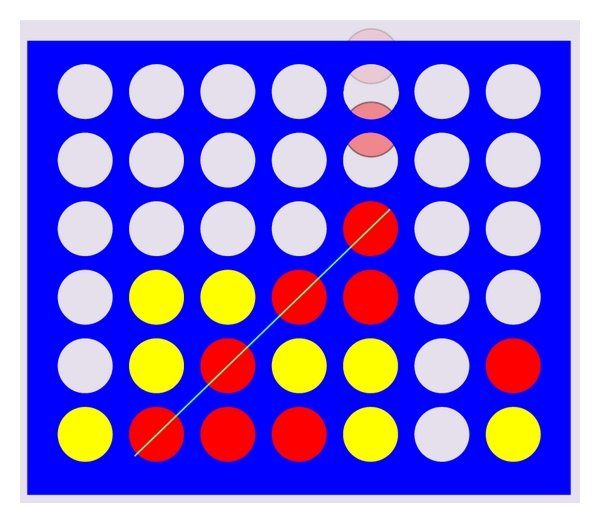
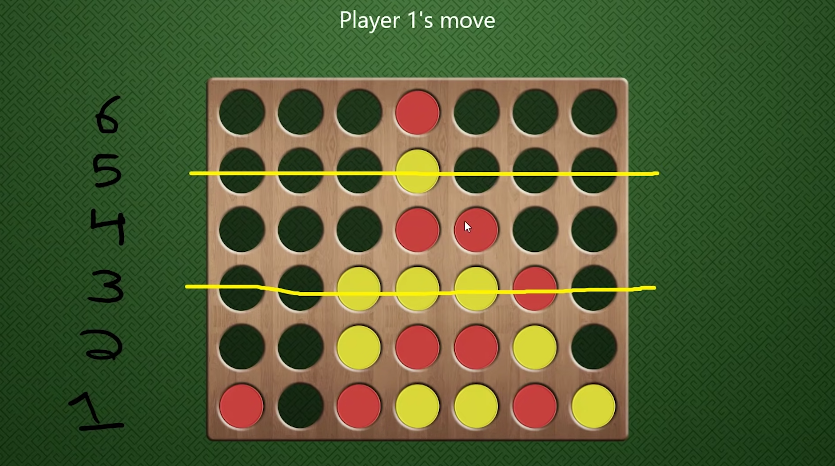
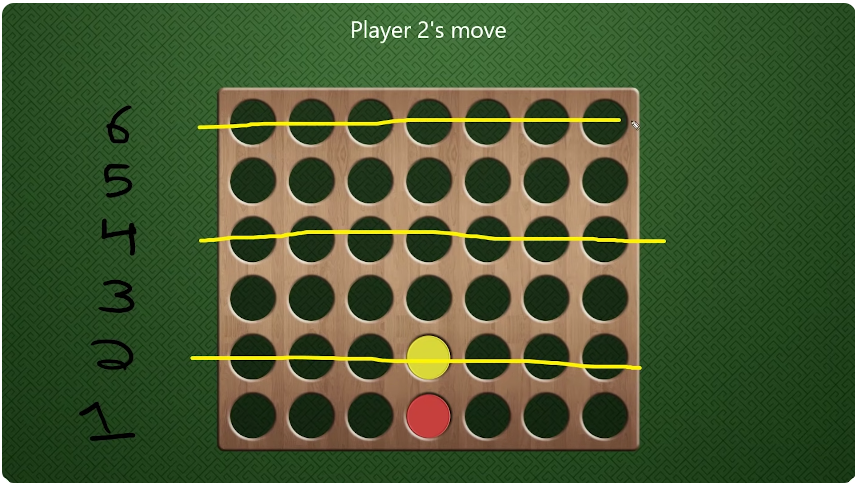
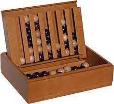
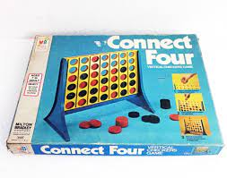
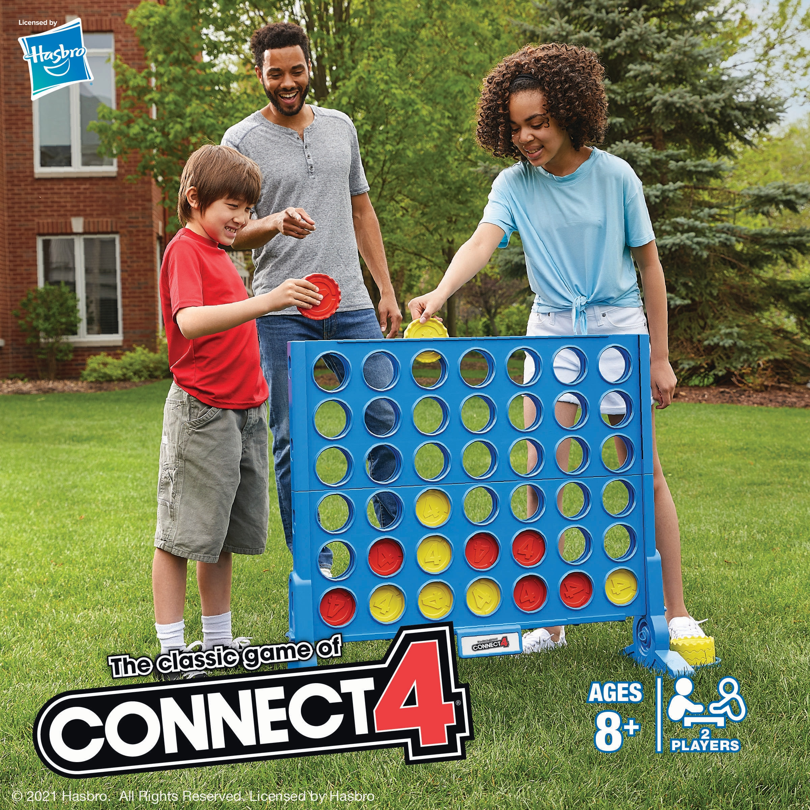

Connect Four, or as many other players call it by such as Captains Mistress, Four Up, Plot Four, Find Four, Fourplay, Four in a row, Four in a line. In France it is called Puissance 4. But back to the explanation, the game is played by 2 players either yellow or red and the first to CONNECT 4 in a row in the columns on the table vertically, horizontally or diagonally win!
The table consists of 6 rows by 7 columns with a total of 42 possible places to drop your piece. If you can play tic tac toe, you can easily pick up this simple but complex game!
This game can be played by anyone who likes a fun and strategic game, yes you heard that right this game may be aimed for kids but there is more math behind it then you think.
Experts have discovered that there are Four Trillion Five Hundred and Thirty One Billion Nine Hundred and Eighty Five Million Two Hundred and Nineteen Thousand and Ninety Two possible possibilites in which you can place in the table. WOW, thats A lot, it gets very complicated quickly so if your not into the numbers scroll to the tips but if you are stick around!
Placing in the middle will secure you a definite win as the game goes on Player 1 corners Player 2 after the rows are filled.
If you see the board as a grid, you can make out that a row can be even or odd, which is exactly like the player can be. The first player playing will be odd  The Second Player will be even. 
James Cook, a British explorer and cartographer known for his many expiditions to the Pacific Ocean in 1768 to 1779 all way to New Zealand has been credited for the inspiration for this game as he would play this game with his officers during hard and long voyages, which is where the name "Captain Mistress", comes from! The game involved placing balls into wooden runners (columns pretty much) on a box lid. 
Many centuries later, more revelance of this game started to show up during the Edwardian Eras of 1900s making its way to a certain man called Milton Bradley who is credited for producing the game Connect 4 in Britain in 1974. 
Later in 2015, Hasbro got rights for the game and licensed other game comapnies to make similar copies such as Garden Games which made the Giant Version making it offical. 